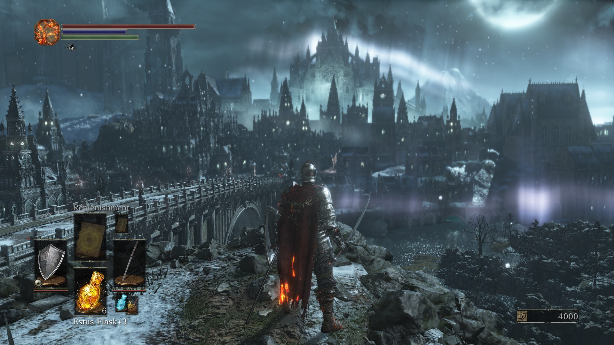
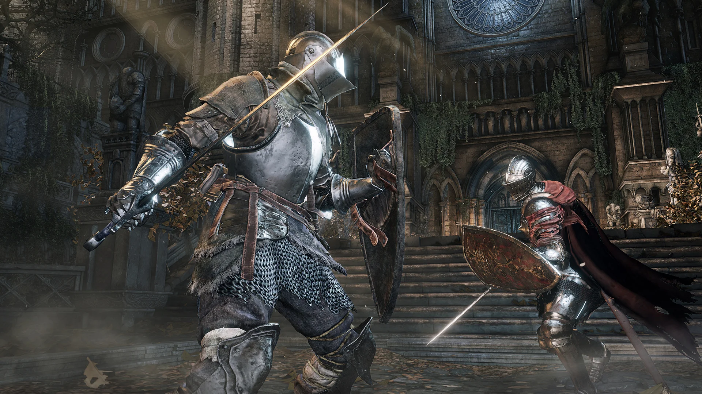
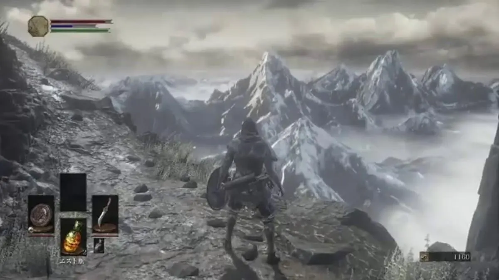
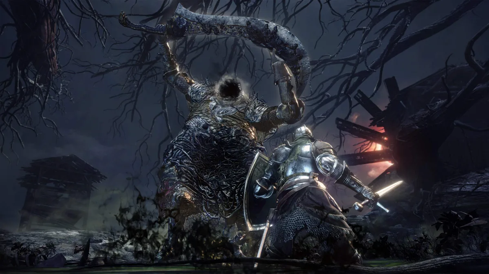

Dark Souls 3

Dark Souls 3 is a 2016 Action Role-Playing game made by FromSoftware. It is played in third person perspective and follows the player character's quest to return to the First Flame and decide the fate of the flame once and for all. They do this by leveling up stats in order to become more powerful, while confronting past enemies from a bygone age, as well as new and powerful foes! Here is a brief synopsis taken from Wikipedia:
Synopsis
In Lothric, a bell tolls to signal that the First Flame, responsible for maintaining the Age of Fire, is dying out. As has happened many times before, the coming of the Age of Dark produces the undead: cursed beings that rise after death. The Age of Fire can be prolonged by linking the fire, a ritual in which great lords and heroes sacrifice their souls to rekindle the First Flame. However, Prince Lothric, the chosen linker for this age, abandoned his duty and chose to watch the flame die from afar. The bell is the last hope for the Age of Fire, resurrecting previous Lords of Cinder (heroes who linked the flame in past ages) to attempt to link the fire again; however, all but one Lord shirk their duty. Meanwhile, Sulyvahn, a sorcerer from the Painted World of Ariandel, wrongfully proclaims himself Pontiff and seizes power over Irithyll of the Boreal Valley and Anor Londo as a tyrant. The Ashen One, an Undead who failed to become a Lord of Cinder and thus called an Unkindled, rises and must link the fire by returning Prince Lothric and the defiant Lords of Cinder to their thrones in Firelink Shrine.
Available On:
- Xbox
- PC
- Playstation
- Nintendo Switch
Image Gallery



